本系列的前10篇，俺着重介绍了“六四事件”的背景，只有了解这些背景，你或许才能理解，在胡耀邦逝世之后那短短的1-2个月里，为什么会发生那么多事情。
今天这篇，俺先来介绍一下：全国各地对老胡的悼念活动。
在老胡去世后的那段时间，每天都有几百人次（多的时候有上千人次）到老胡家里悼念。
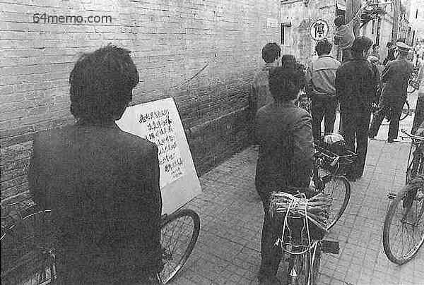
（大量民众自发到位于“会计师胡同25号”的胡耀邦家中悼念）
在这些悼念的人里面，有一些人是受到了老胡的帮助，来表示感恩的（老胡当年主持“平反冤假错案”的工作，平反了不少人）；更多的人是钦佩其人品和功绩，而上门悼念。在这些悼念的人里面，不乏老胡生前的政敌（也就是朝廷中的保守派）。上门悼念的这些保守派，虽然跟老胡的政见不同，但都承认老胡是正人君子，从来不在背后搞小动作。俺在前面的帖子里，介绍了老胡的人品很好，从这里也可以看出来。
顺便再说一下，老胡生前住在府右街路西的会计师胡同25号，是个四合院。那地方，普通老百姓都可以去，家门口也没有荷枪实弹的警卫。即使在老胡升任总书记期间，他也没有搬到红墙之内的中南海。他觉得，住到戒备森严的中南海里，会脱离群众。
大伙儿再对比一下后来的总书记胡锦涛（绰号“胡面瘫”）——同样都姓胡，差距咋就这么大捏？
为了叙述方便，本节俺依据时间线来介绍。
据《新闻背后的故事》一书记载，老胡逝世的消息，最早是在4月15日12点20分，由新华社向境外发布简讯；然后，中央电台在14点04分首次对国内播音。
在那天下午的15点多，就已经有北大学生开始在三角地（此“三角地”堪称中外闻名）贴出悼念的大字报（俺不禁感叹北大学生的响应速度）。到了下午16点多，三角地已经贴满大字报，其内容已经开始包含政治色彩。比如：
除了北大，首都的其它几个知名高校（比如：人民大学、清华大学），在15日下午或夜间，也陆续出现悼念老胡的大字报。
到了4月16日，大部分北京高校都出现了相关的大字报。并且有很多大学生在围观，抄录。
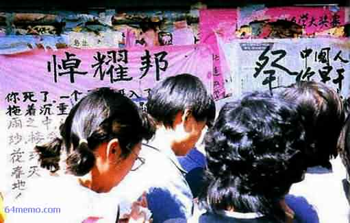
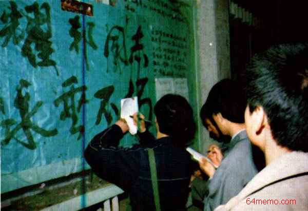
除了校内的大字报，天安门广场的人民英雄纪念碑（以下简称纪念碑）已开始出现零星的纪念活动。16日这天，有人在纪念碑上敬献了8个花圈，另外还有一些挽联。
但是，不知出于何种原因，公安人员在半夜把这些花圈、挽联都收走了。这个做法无疑让学生们很恼火。很多学生就想：你不让我们搞，我们非要搞。这也部分导致了第二天更大规模的学生到纪念碑搞悼念活动。
下图是北大学生发现花圈被收走之后，写的大字报。其中还影射了文革末期发生的“四五运动”。
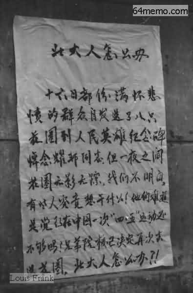
（北大校内的大字报《北大人怎么办》，抗议广场上的花圈被官方收缴）
这一天，开始有大量的高校学生走出校园，去天安门广场悼念。除了刚才提到的，很多学生对官方悄悄收走花圈很不满，还有另一个原因：有一些大学的师生本来要在校内开追悼会，搞悼念活动。但是学校的领导对“八六学潮”心有余悸，不允许学生在校内搞（在校内搞，出了问题，校领导要负全责；在校外搞，出了问题，校领导的干系就小多了）。上述这两个原因，使得北京的悼念活动急剧升温。
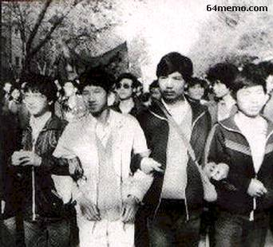
（北大学生手挽手走出校门）
当天，中央美院的学生制作了大幅遗像（不愧是学美术的）并放到了纪念碑上，成为纪念碑上最醒目的标志。截至当天傍晚时分，纪念碑上分别出现过如下署名的花圈：“清华大学化学系”、“北航部份学生”、“北大师生”、“北师大师生”、“中国社科院全体研究生”、“中国政法大学青年教师敬挽”、“北京医科大学学生会”、“一个政法干部”。

（纪念碑上的大幅遗像，两边写着：
（横幅上写着：

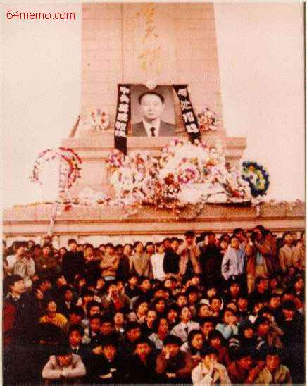
（纪念碑周围聚集的人群）

（纪念碑底座上放了许多花圈）
到了晚上19点多，有2-3千人聚集在纪念碑附近；过了零点之后，依然有200-300人聚集不散。
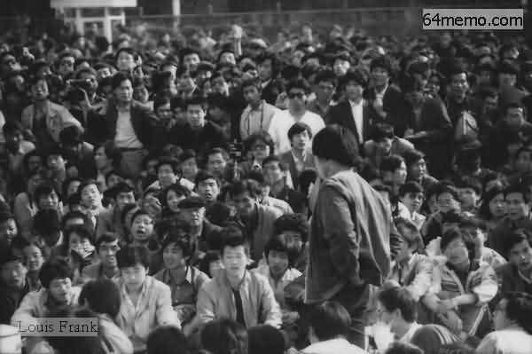 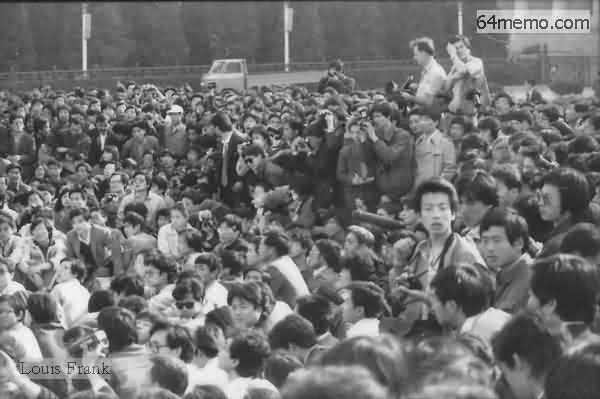 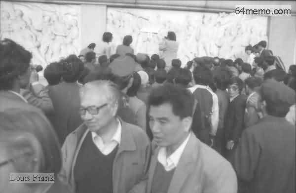 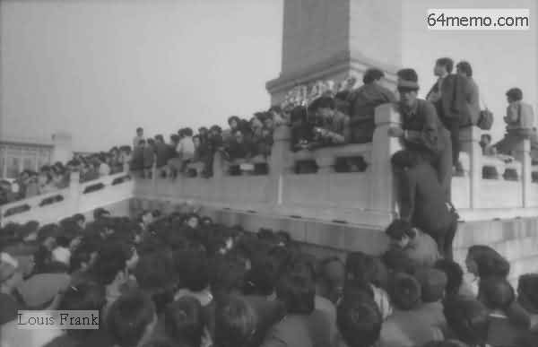 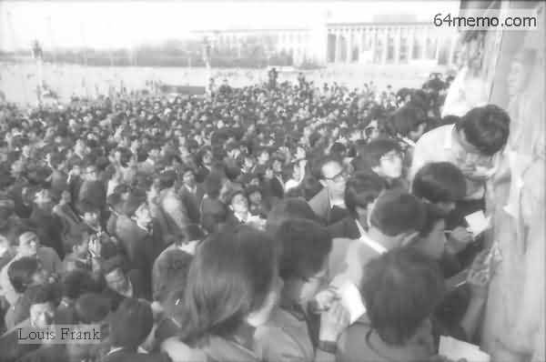 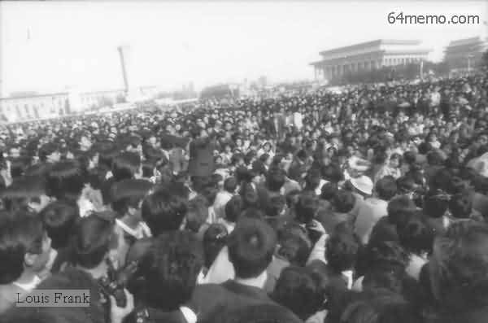 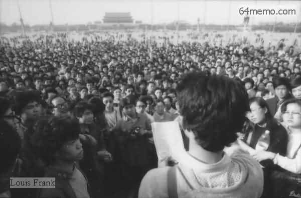
当天晚上22点多，有北大学生制作了10米多长、2米多宽的长辐，上书"中国魂——部分北大校友暨师生敬挽"。一开始，只有少数学生拉着这个横幅在校内游行。随着越来越多的学生加入，很多人提议到广场上去。当队伍走出校园时，大约有千余人；步行途中，又有千余名人民大学学生及千余名清华大学学生加入。三千多人在凌晨4点30分左右，走到纪念碑，把条幅挂在纪念碑上。
除了广场上的悼念，校园内的大字报依然不断，吸引越来越多的人围观——围观者除了有本校学生，也有社会上的群众。
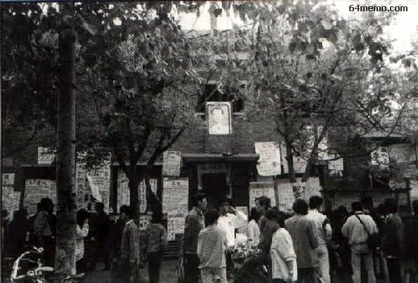
（北京师范大学校内的大字报）
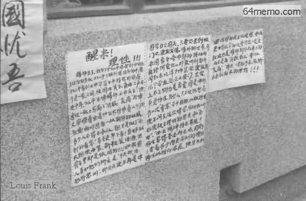
（人民大学校内的大字报《醒来！理性！》）
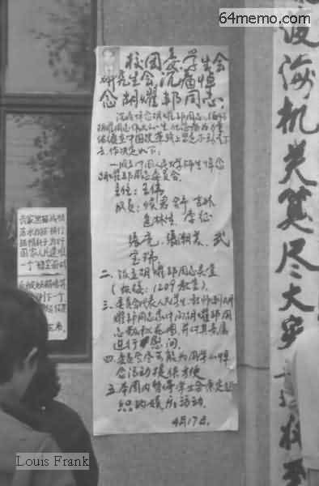
（人民大学校团委会学生会的大字报）
下面这几张，都是北大三角地的照片。很多人在抄写大字报内容。
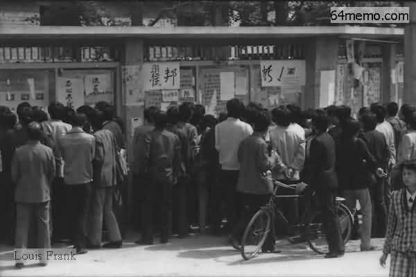
（北大的学生在三角地抄阅大字报）
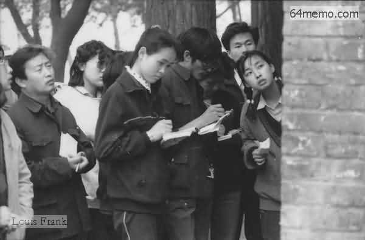
（北大的学生在三角地抄阅大字报）
（北大的学生在三角地抄阅大字报）
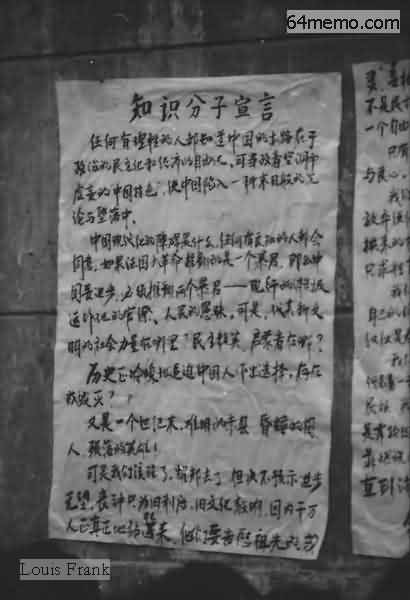
（大字报《知识分子宣言》第1页） 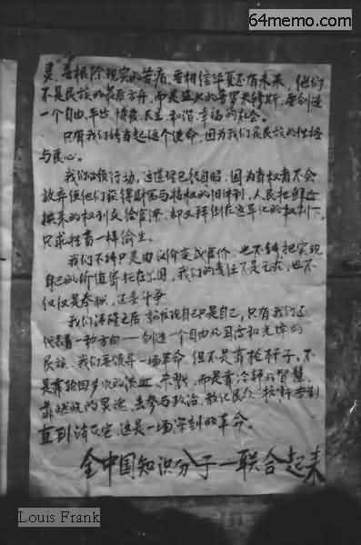
（大字报《知识分子宣言》第2页）
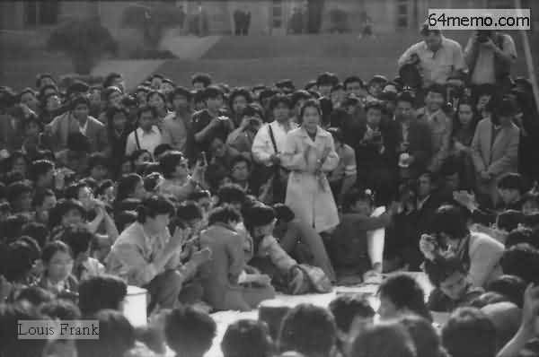
（北大的学生在三角地抄阅大字报）
这一天，广场上聚集的人群又增加了不少。仔细对比18日和17日的照片，能看出广场上的人数明显增加。这天聚集的人群，据说有将近10万人。
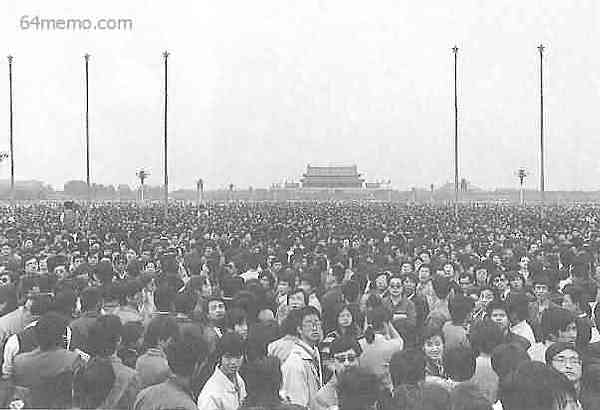 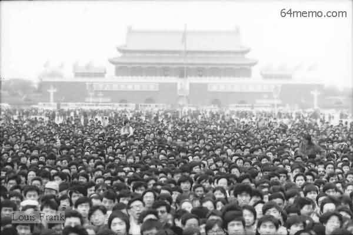
送花圈和挽联的高校也是络绎不绝。
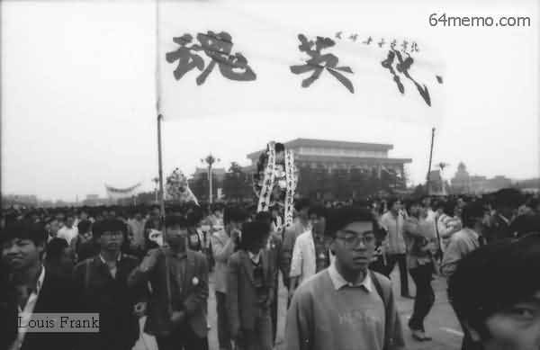 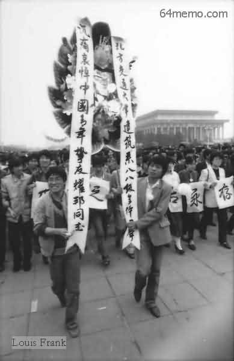
18日还发生一件事情——上万名大学生到人民大会堂门口静坐请愿——此事标志着学生运动发展到一个新的阶段。关于这事儿，俺在下一个帖子细说。
老胡刚一逝世，朝廷高层就隐隐感到一丝危机。4月15日当天，裆中央就要求首都及各大城市的公安部门、安全部门，要密切关注悼念的实时动态。所以，从那天开始，各地的公安部门、安全部门开始频繁地给朝廷高层发送“通报”。在《天安门文件》（又名《中国六四真相》）一书中，摘录了不少这样的通报。咱们可以从中了解各地高校在那几天的动态。
估计有同学会纳闷，《中国六四真相》的作者，为什么能拿到这些送交给朝廷高层的通报？因为此书的作者，据说也是朝廷高层人士，出于某种目的，把内部的机密材料流传出来。关于这本书的真实性，民间存在争议；天朝官方，对此书更矢口否认。不过俺个人觉得：书中的大部分内容是可信的，少数涉及高层决策的内容，有可能被篡改过。在本系列后续博文中，俺还会多次引用此书的内容。为了确保资料来源的可靠/可信，俺会尽量找不同的书籍，跟《天安门文件》一书进行【交叉印证】。
四月十八日八时报告
四月十七日晚间报告
四月十八日十五时报告
四月十八日报告
看完上述这些通报，大伙儿不难发现，公安部和安全部作为朝廷的爪牙，不光办事效率高，还挺仔细的——连某某大学贴了多少大字报，都一张一张地数清楚。为党国卖命，看来也蛮辛苦哦。
（本文照片引自 六四档案 和 自由中国论坛）
回到本系列的目录
今天这篇，俺先来介绍一下：全国各地对老胡的悼念活动。
★北京民众上门悼念
在老胡去世后的那段时间，每天都有几百人次（多的时候有上千人次）到老胡家里悼念。
（大量民众自发到位于“会计师胡同25号”的胡耀邦家中悼念）
在这些悼念的人里面，有一些人是受到了老胡的帮助，来表示感恩的（老胡当年主持“平反冤假错案”的工作，平反了不少人）；更多的人是钦佩其人品和功绩，而上门悼念。在这些悼念的人里面，不乏老胡生前的政敌（也就是朝廷中的保守派）。上门悼念的这些保守派，虽然跟老胡的政见不同，但都承认老胡是正人君子，从来不在背后搞小动作。俺在前面的帖子里，介绍了老胡的人品很好，从这里也可以看出来。
顺便再说一下，老胡生前住在府右街路西的会计师胡同25号，是个四合院。那地方，普通老百姓都可以去，家门口也没有荷枪实弹的警卫。即使在老胡升任总书记期间，他也没有搬到红墙之内的中南海。他觉得，住到戒备森严的中南海里，会脱离群众。
大伙儿再对比一下后来的总书记胡锦涛（绰号“胡面瘫”）——同样都姓胡，差距咋就这么大捏？
★北京高校师生的悼念
为了叙述方便，本节俺依据时间线来介绍。
◇4月15日
据《新闻背后的故事》一书记载，老胡逝世的消息，最早是在4月15日12点20分，由新华社向境外发布简讯；然后，中央电台在14点04分首次对国内播音。
在那天下午的15点多，就已经有北大学生开始在三角地（此“三角地”堪称中外闻名）贴出悼念的大字报（俺不禁感叹北大学生的响应速度）。到了下午16点多，三角地已经贴满大字报，其内容已经开始包含政治色彩。比如：
该走的不走，不该走的却走了（影射邓小平老不死，而胡耀邦却早逝）
除了北大，首都的其它几个知名高校（比如：人民大学、清华大学），在15日下午或夜间，也陆续出现悼念老胡的大字报。
◇4月16日
到了4月16日，大部分北京高校都出现了相关的大字报。并且有很多大学生在围观，抄录。
除了校内的大字报，天安门广场的人民英雄纪念碑（以下简称纪念碑）已开始出现零星的纪念活动。16日这天，有人在纪念碑上敬献了8个花圈，另外还有一些挽联。
但是，不知出于何种原因，公安人员在半夜把这些花圈、挽联都收走了。这个做法无疑让学生们很恼火。很多学生就想：你不让我们搞，我们非要搞。这也部分导致了第二天更大规模的学生到纪念碑搞悼念活动。
下图是北大学生发现花圈被收走之后，写的大字报。其中还影射了文革末期发生的“四五运动”。
（北大校内的大字报《北大人怎么办》，抗议广场上的花圈被官方收缴）
◇4月17日
这一天，开始有大量的高校学生走出校园，去天安门广场悼念。除了刚才提到的，很多学生对官方悄悄收走花圈很不满，还有另一个原因：有一些大学的师生本来要在校内开追悼会，搞悼念活动。但是学校的领导对“八六学潮”心有余悸，不允许学生在校内搞（在校内搞，出了问题，校领导要负全责；在校外搞，出了问题，校领导的干系就小多了）。上述这两个原因，使得北京的悼念活动急剧升温。
（北大学生手挽手走出校门）
当天，中央美院的学生制作了大幅遗像（不愧是学美术的）并放到了纪念碑上，成为纪念碑上最醒目的标志。截至当天傍晚时分，纪念碑上分别出现过如下署名的花圈：“清华大学化学系”、“北航部份学生”、“北大师生”、“北师大师生”、“中国社科院全体研究生”、“中国政法大学青年教师敬挽”、“北京医科大学学生会”、“一个政法干部”。
（纪念碑上的大幅遗像，两边写着：
何处招魂——中央美院敬挽）
（横幅上写着：
民主之光耀邦，并配以英文）
（纪念碑周围聚集的人群）
（纪念碑底座上放了许多花圈）
到了晚上19点多，有2-3千人聚集在纪念碑附近；过了零点之后，依然有200-300人聚集不散。
当天晚上22点多，有北大学生制作了10米多长、2米多宽的长辐，上书"中国魂——部分北大校友暨师生敬挽"。一开始，只有少数学生拉着这个横幅在校内游行。随着越来越多的学生加入，很多人提议到广场上去。当队伍走出校园时，大约有千余人；步行途中，又有千余名人民大学学生及千余名清华大学学生加入。三千多人在凌晨4点30分左右，走到纪念碑，把条幅挂在纪念碑上。
除了广场上的悼念，校园内的大字报依然不断，吸引越来越多的人围观——围观者除了有本校学生，也有社会上的群众。
（北京师范大学校内的大字报）
（人民大学校内的大字报《醒来！理性！》）
（人民大学校团委会学生会的大字报）
下面这几张，都是北大三角地的照片。很多人在抄写大字报内容。
（北大的学生在三角地抄阅大字报）
（北大的学生在三角地抄阅大字报）
（北大的学生在三角地抄阅大字报）
（大字报《知识分子宣言》第1页）
（大字报《知识分子宣言》第2页）
（北大的学生在三角地抄阅大字报）
◇4月18日
这一天，广场上聚集的人群又增加了不少。仔细对比18日和17日的照片，能看出广场上的人数明显增加。这天聚集的人群，据说有将近10万人。
送花圈和挽联的高校也是络绎不绝。
18日还发生一件事情——上万名大学生到人民大会堂门口静坐请愿——此事标志着学生运动发展到一个新的阶段。关于这事儿，俺在下一个帖子细说。
★其它城市的悼念
老胡刚一逝世，朝廷高层就隐隐感到一丝危机。4月15日当天，裆中央就要求首都及各大城市的公安部门、安全部门，要密切关注悼念的实时动态。所以，从那天开始，各地的公安部门、安全部门开始频繁地给朝廷高层发送“通报”。在《天安门文件》（又名《中国六四真相》）一书中，摘录了不少这样的通报。咱们可以从中了解各地高校在那几天的动态。
估计有同学会纳闷，《中国六四真相》的作者，为什么能拿到这些送交给朝廷高层的通报？因为此书的作者，据说也是朝廷高层人士，出于某种目的，把内部的机密材料流传出来。关于这本书的真实性，民间存在争议；天朝官方，对此书更矢口否认。不过俺个人觉得：书中的大部分内容是可信的，少数涉及高层决策的内容，有可能被篡改过。在本系列后续博文中，俺还会多次引用此书的内容。为了确保资料来源的可靠/可信，俺会尽量找不同的书籍，跟《天安门文件》一书进行【交叉印证】。
◇上海
四月十八日八时报告
十七日夜，上海分别有两支学生队伍上街悼念胡耀邦同志。一支是由复旦大学、同济大学组成，晚十时许从复旦出发，至十一时左右，在同济大学内聚集了数千人。这个行动没有严密的组织，大部份学生是自发参加，而且“看热闹的”较多。十一时二十分左右，近千名学生从同济校门出来，举着“沉痛悼念胡耀邦同志”、“耀邦我们来了”、“士为知己者死”等标语，到市政府、市人大常委会所在地，要求市政府领导接见，至今天凌晨四时许散去；
另一支由华东师范大学近千名学生组成，走出校门后去中国纺织大学、上海交通大学串连，没得到多大响应后，于今天凌晨三时悄然回校。这支队伍中有"悼胡公"、"沉痛悼念耀邦先生"等横幅，并携带两只花圈，一只花圈上的挽词较出格：“敢与鬼雄争曲直”。
◇天津
四月十七日晚间报告
悼念胡耀邦同志的活动从校园走向街头。今天晚上九时二十分，南开大学学生一千多人走出校门上街游行。他们一路高唱《国际歌》、《国歌》和《我们的队伍向太阳》等歌曲，高呼“打倒独裁”、“打倒专制”、“民主万岁”、“自由万岁”等口号。
南开大学学生走出校门后，向南奔向邻近的天津师范大学，途经八里台立交桥，一时造成交通堵塞。
十名左右外国青年人手持像机也在游行队伍中。师范大学校门紧闭，南开学生齐喊口号，一遍遍冲挤铁门，召唤师大学生参加游行。师大学生在校领导和老师劝导下，未出校响应。九时五十分，一队公安干警到现场维持秩序，校门前的学生和围观的群众发出一阵阵嘲笑的“嘘”声，到十一时左右，三五成群的学生走回南开大学。据了解，这次活动没有严密的组织，学生大多是自发参加，游行队伍中也没有其他身份者参与。
◇陕西
四月十八日十五时报告
从今天凌晨开始，西安部份高等院校的学生走向街头，将悼念活动由校园推向社会。
零时四十分，西安交通大学和陕西机械学院二千多名学生，徒步自咸宁路向西入和平门，经大差市到东大街、钟楼，最后集中到新城广场。沿途，学生们喊着“沉痛悼念胡耀邦同志”等口号。
一时三十分，学生们进入位于新城广场北部的陕西省政府大楼，在大楼内继续呼喊口号。三时二十分开始，学生们分批返回学校，四时左右全部返回学校。
中午十二时三十分左右，西北大学、陕西师范大学等院校约一千多学生，再次来到新城广场集会。在广场中心升国旗的旗杆上，献了一个花圈，并将花圈升至半空中。
十三时三十分至四十分，分别有两位学生站在旗杆底部约二米高的水泥墩上，发表悼念胡耀邦同志的演说。
十四时以后，几位学生拿着一个一面写着“募捐”字样的纸箱，募捐为胡耀邦同志买花圈。许多学生纷纷捐款。
十三时三十分左右，座落在西安市南郊的西北政法学院的四百名学生，也已走出校门到西安烈士陵园进行悼念活动。
据了解，至今尚未发现学生游行被人操纵，学生的行为大多是自发的，参加游行的学生没有被强迫拉来的。省委将密切注意可能出现的新动向。
◇湖南
四月十八日报告
连日来，湘潭大学、湖南师范大学、国防科技大学、中南工业大学等院校的学生采取各种形式，深切悼念耀邦同志。
十六日晚十时三十分，湘潭大学出现二十四张标语挽联，至十八日下午已有三十六张。十七日晚十点左右，该校以哲学、历史、经济系为主的学生烧报纸、衣服等物品，围观的学生慢慢聚集到一千人左右。有人提议到市里去游行，许多学生手挽手、唱着《国际歌》走出校门。途中个别学生喊“打倒邓小平”、“邓小平下台”、“打倒封建专制主义”等口号，中间有六百多名学生陆续返回学校。
至凌晨二时许，三百多名学生到达湘潭市委、市政府，市政府派人作了工作后，然后派汽车将他们送回校。
十八日上午九时，湘潭大学校园内又出现了一些大小字报。这些大小字报的内容基本是围绕悼念胡耀邦同志的，但也有个别反动言行。
据统计，湖南师范大学出现了七幅标语挽联，中南工业大学有三张，国防科技大学也有三张，湘潭纺织专科学校有二十四张，湖南省干部经济管理学院还设了灵堂。
省委认为，少数学校虽然表面平静，但师生中有不少猜疑和不安的议论。有一种普遍的意见是，“五四”快到了，两件事应结合起来搞。因此，学生的悼念活动还在发展之中，可能在耀邦同志追悼大会时形成高潮。针对这一情况，省委已要求有关部门做好疏导工作，并要求安排力量日夜值班，密切注重局校动向。
看完上述这些通报，大伙儿不难发现，公安部和安全部作为朝廷的爪牙，不光办事效率高，还挺仔细的——连某某大学贴了多少大字报，都一张一张地数清楚。为党国卖命，看来也蛮辛苦哦。
（本文照片引自 六四档案 和 自由中国论坛）
回到本系列的目录
版权声明
本博客所有的原创文章，作者皆保留版权。转载必须包含本声明，保持本文完整，并以超链接形式注明作者编程随想和本文原始地址：
https://program-think.blogspot.com/2012/01/june-fourth-incident-11.html
本博客所有的原创文章，作者皆保留版权。转载必须包含本声明，保持本文完整，并以超链接形式注明作者编程随想和本文原始地址：
https://program-think.blogspot.com/2012/01/june-fourth-incident-11.html